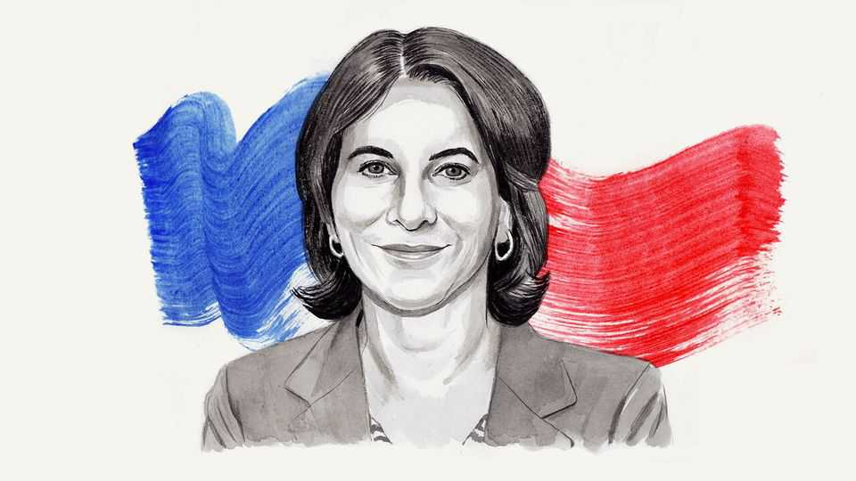

How the war on terror primed America for autocracy
The road from 9/11 leads directly to January 6th, writes Rosa Brooks
June 11th 2026

LIKE VIRTUALLY every American over 40, I remember where I was when I learned of the 9/11 attacks. I was driving to work, listening to National Public Radio. When I got to the office people were wandering about, shocked. Some were crying. Others were huddled around computer monitors. Every screen showed the same things, over and over: the planes flying into the towers, the tiny shapes that were human beings leaping into nothingness, the towers collapsing, the clouds of smoke and debris rising.
No one knew much. Al-Qaeda wasn’t yet a household name, and it took several days for officials to confidently identify Osama bin Laden’s group as the perpetrators. But even in those first stunned hours, one thing was apparent: this would change our world, and not for the better.
A quarter-century later, it’s easier to assess the damage. The 9/11 attacks marked the beginning of the end of American global leadership, launching us into a state of permanent fear and emergency that, in turn, helped enable the precipitous decline of our democracy.
The events of 9/11 themselves, and al-Qaeda more generally, did not pose an existential threat to the United States. The richest country on Earth could, and did, shrug off the economic impact, and from a cold actuarial perspective, in a nation so large—one that routinely loses 15,000-20,000 people a year to homicide—the 3,000 deaths on 9/11, however tragic, weren’t likely to cripple the country. It was our predictable overreaction that did us in.
Less than a month after 9/11 President George W. Bush invaded Afghanistan, starting a war that would last for 20 years and kill more than 6,000 American military personnel and contractors before its ignominious end. Six weeks after the attacks Congress passed the USA PATRIOT Act, permitting a previously undreamt-of expansion of government surveillance and detention authorities. Within six months Mr Bush signed a directive declaring the Geneva Conventions inapplicable to the conflict with al-Qaeda. A year after that we went to war in Iraq as well, relying on false claims that its dictator, Saddam Hussein, possessed weapons of mass destruction and was aiding al-Qaeda. That war would leave more than 8,000 American troops and contractors dead.
By the end of 2004 the surge of global goodwill America had enjoyed in the immediate aftermath of 9/11 had evaporated. Too many dead bodies had piled up, for one thing: in addition to the thousands of American and allied military personnel killed in Iraq, Afghanistan and other far-flung outposts of the global war on terror, hundreds of thousands of Afghans and Iraqis were dead. By overseeing the indefinite detention of terrorist suspects and the use of torture, the Bush administration had also squandered any claims to moral leadership: once viewed, images of naked Iraqi prisoners piled into human pyramids couldn’t easily be unseen.
But the self-inflicted damage continued after Mr Bush left office. Although President Barack Obama rolled back many of the Bush administration’s most egregious policies, such as the use of torture, the “forever war” proved difficult to end. Mr Obama acknowledged that playing whack-a- mole with terrorists wasn’t a sustainable strategy, but he couldn’t seem to stop; he expanded the use of drone strikes and other targeted killings of terrorist suspects around the world. Like the Bush administration’s use of torture, the targeted killings programme, which continued under Donald Trump and Joe Biden, was notably lacking in meaningful due process. The executive branch insisted it had the right to kill anyone, anywhere, at any time based on classified evidence it declined to disclose, essentially declaring itself judge, jury and executioner.
The 9/11 attacks reverberated domestically as well. The 2001 PATRIOT Act was just the beginning: surveillance and detention authorities continued to expand, and surveillance technologies developed on the battlefield were later adopted by police at the federal, state and local levels. Legal doctrines developed in the context of national-security-related issues increasingly found their way into ordinary civil and criminal cases. As a quiescent Congress ceded ever more power to the executive branch, “emergency” authorities granted in the wake of 9/11 became permanent.
Just as perniciously, America became a nation defined by fear and mutual suspicion. Jolted out of their pre-9/11 sense of invulnerability, citizens turned on one another. Islamophobia and xenophobia rose. Conspiracy theories spread: the attacks were an inside job, or an Israeli plot, or planned by Wall Street elites who profited from insider trading. Political polarisation increased, too. By 2014 more than a quarter of Democrats and more than a third of Republicans saw the other political party as a “threat to the nation’s well-being”. Far-right and white-nationalist groups gained traction.
Of course, 9/11 wasn’t the sole cause of America’s democratic decline, but it helped create the legal, political and psychological conditions in which that decline accelerated. By 2015, when a certain New York reality-TV phenomenon began his rise to power, we were already a nation ripe for authoritarian takeover from within. Weakened by internal division, with a populace habituated to executive overreach and violations of due-process norms, what chance did American democracy have against an authoritarian in the White House?
By the time a violent right-wing mob stormed the Capitol on January 6th 2021, it had become clear that the gravest, most existential threat to American democracy wasn’t a vicious and homicidal band of Islamist extremists. It was our own citizens, goaded by an autocratic president to whom we had handed vast powers.
In 1776 the American colonists rebelled against what they saw as the arbitrary and tyrannical British monarchy. As we approach America’s 250th birthday, it’s hard not to imagine Mad King George gazing out at Donald Trump’s America—and laughing. ■
Rosa Brooks is the Scott K. Ginsburg chair in law and policy at Georgetown University.